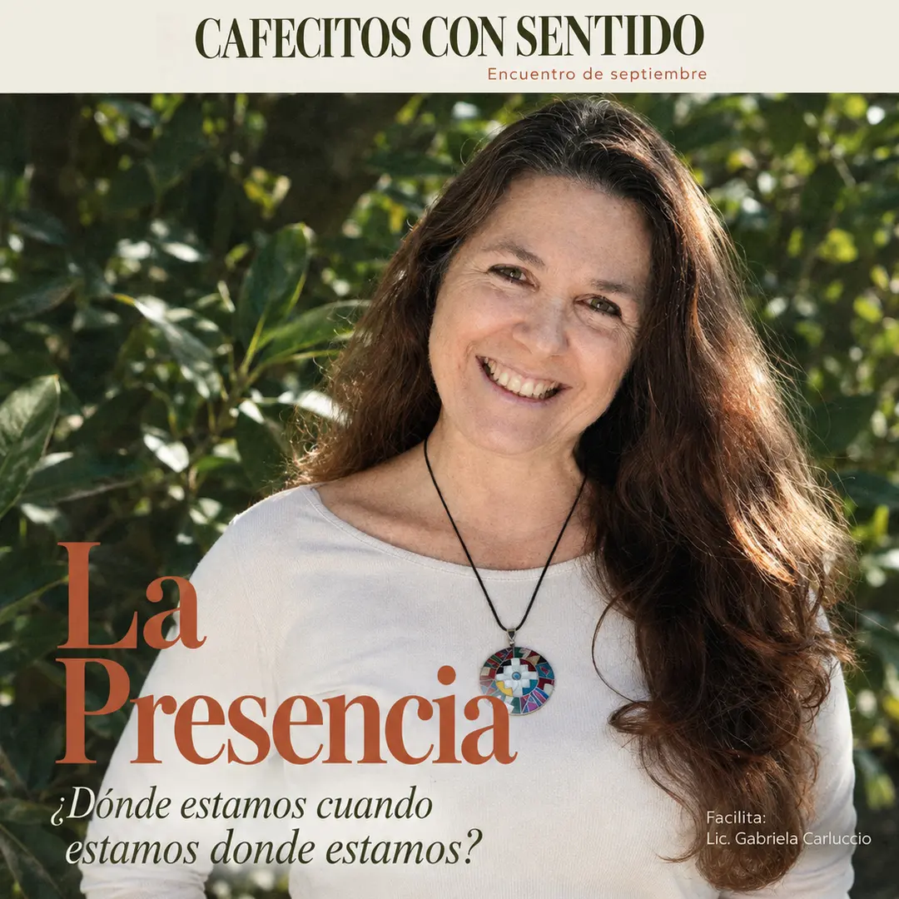

Club de conversación¿Dónde estamos cuando estamos donde estamos?
Este encuentro parte de una pregunta que parece simple, pero no lo es. Vamos a recorrer juntos qué significa estar presentes con el cuerpo, con la mente y con los sentidos.
Cupos limitados.
Cafecitos con Sentido es un espacio de encuentro para conversar sobre lo que realmente importa: los vínculos, las emociones y las preguntas que solemos posponer.
Son charlas con contenido profundo, contadas en un lenguaje simple y cercano, alrededor de una mesa y un café. Cada mes hay un tema nuevo, y no hace falta haber venido a encuentros anteriores.
Gabriela Carluccio es licenciada en Relaciones Públicas. Especialista, formadora y facilitadora de Eneagrama, con amplia experiencia en Recursos Humanos y Comunicación Institucional.
Da charlas, talleres y formaciones de liderazgo consciente y Eneagrama. Es la creadora de Cafecitos con Sentido, donde combina herramientas de desarrollo personal y espiritualidad con un lenguaje simple y cercano.
Las consultas y reservas las gestiona directamente Gaby.
Escribile por WhatsApp o por mail: gabycarluccio.info@gmail.com